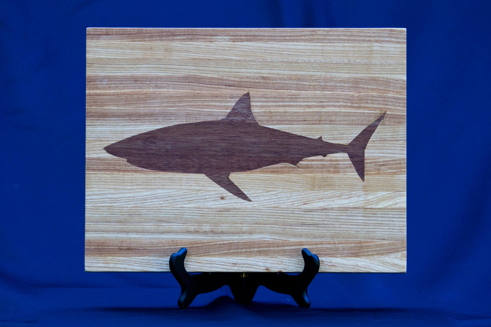

Max Christopher
Born and raised on Cape Cod, I can't get enough of the beach. I love to be outdoors, running on the beaches, biking in the woods, or just enjoying the sun. There's no better day than driving onto Nauset Outter, parking on the sand 20 feet from the ocean. This summer I'll be working at a summer camp every morning. I'll also be continuing some virutal research on sea ice levels with a professor at the College.
I'll be a Junior at Harvard College in the Fall, and can't wait to get back to campus. I've always loved working with my hands and trying to build thing on my own. So far, my experience has been mostly non-technical. I've worked a lot in the woodshop, creating everything from bowls, to rocking chairs. However, I briefly used a CNC Machine to create the shark inlay in the cutting board as seen below. I'm excited to learn more and can't wait to see what we all are able to create in this class!
